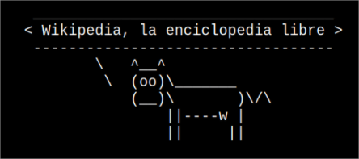
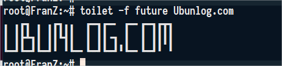
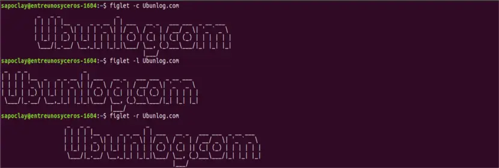

COWSAY - FORTUNE

Install
1 Command
sudo apt-get install cowsay
2 PATHearemos la ruta donde se instaló Cowsay y Fortune guardando esta ruta en nuestro .bashrc
PATH="$PATH:/usr/games"
export PATH
Font: https://raspberrypi.stackexchange.com/questions/1091/cowsay-not-working
3 Fortune necesita de una libreria de datos llamada fortunes para decirnos algo podemos elegir entre fortunes-min y fortunes-es
sudo apt-get update
sudo apt-get install fortunes-es
sudo apt-get update
sudo apt-get install fortunes-es
USOS
cowsay hola mundo
fortune | cowsay
Cambiando a cow por tux linux:
fortune | cowsay -f tux
Para español:
fortune es | cowsay
VARIAS LINEAS
(echo -e "BASH manual\n"; echo -e "Local BASH manual\n"; echo -e "BASH repo\n"; echo -e "BASH") \
| cowthink -W80 -f tux
FIGlet & Toilet
Crea banners de texto AscII desde la terminal
Install
sudo apt install figlet toilet
Ejemplos de uso
Para cambiar a una fuente en particular, utilizaremos la opción -f. Las fuentes se van a leer desde el mismo directorio que cuando utilizamos FIGlet.
toilet -f future Ubunlog.com

Si queremos que la salida se cree en el centro, utilizaremos el argumento -c. Para ello abriremos una terminal (Ctrl+Alt+T) y escribimos en ella:
figlet -c Ubunlog.com

FONT: https://ubunlog.com/figlet-banners-ascii-terminal/